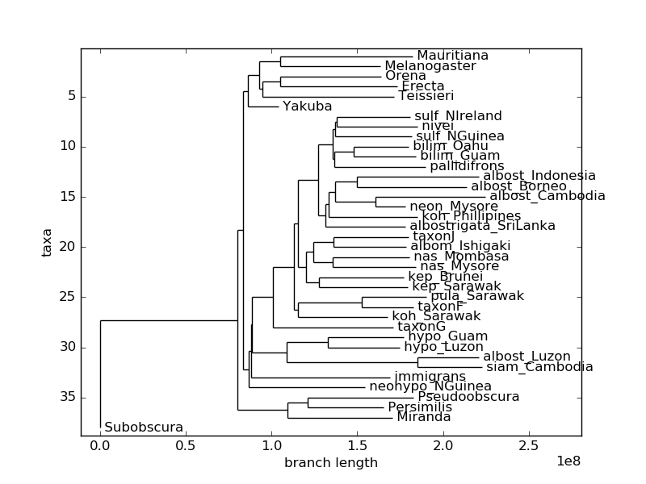

Research Projects:
Grass Genome Assembly
Kmer Based Phylogenetic Modeling
- January 2017 – October 2017
- Tool used: Refresh-bio KMC
- Advisor: Corbin Jones, Jeremy Wang
- Build the accurate phylogenetic model from DNA sequencing data based on kmer without assembly and alignment
- Successfully generate phylogenetic tree from simulated reference primate and raw DNA sequencing data of Drosophila

Class Projects:
2D Graphics Canvas
- September 2017 – December 2017
- Language and Tools: C++, libpng, libsdl2
- Implements fundamentals of modern software 2D graphics: geometric primitives, scan conversion, clipping, transformations, compositing, texture sampling.
- Advanced functions include gradients, antialiasing, filtering, parametric curves, and geometric stroking.


Mail Client and Server
- January 2017 – April 2017
- Language: Python
- Constructed a mail client and server based on Simple Mail Transfer Protocol(SMTP)
- Used socket programming in building the communication link between client and server